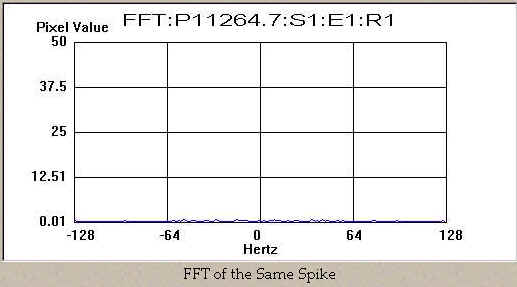
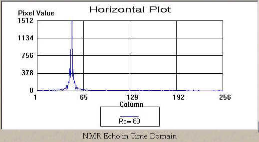
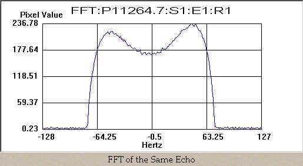
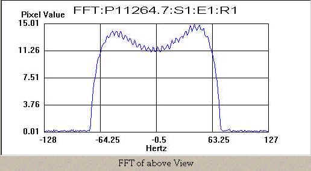
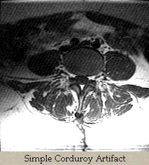

White Pixel - Theory
White Pixels in Raw Data and Images
For purposes of this discussion, let's assume that the engineers of our MRI system have made no accommodations to eliminate or filter the spike noise from the receive data, such as the TNF. (Click here for TNF Theory)
Once spike noise occurs and is received by the MRI system,
how the white pixel(s) effects the end image depends a lot on the amplitude,
number of events and when in the acquisition (k-space) the noise was received.
First, let's get an idea of what a white
pixel would look like in time domain.
That is, if we were viewing the receiver output on an oscilloscope, what
would the waveform look like? It might
look something like this plot:

When we
reconstruct the view (by doing a Fourier Transform it) the single spike looks
like this plot in the frequency domain:

We see that the single spike has all of
its energy spread out in all frequencies across the spectrum of that view. The baseline of the entire view has been
increased slightly. Remember? That's why we call it "broadband"
noise.
When the 2nd FFT is applied (column FFT)
the elevated view's data will appear as a smaller spike (single row) in each
projection, so it's energy will be further spread into all of the frequencies
of each column. Based on this, we can
predict that if there were no other signals collected (ie. no echo or other
spikes) then the single spike would only have the effect of raising the
intensity of the image background slightly and nothing more.
Let's take a look at a normal echo in
both time domain and frequency domain.


The plot in frequency domain is similar to what you would see in manual prescan of a phantom That's because the AP does an FFT of the projection before it is displayed.
...and now let's see what happens to it after we apply our spike noise event. This spike is relatively small in amplitude and is at approximately sample # 98 in the below plot.

If we were to view the entire raw data
file, it might look something like this.

And
then, here's what the FFT of the above view would look like:

Notice that there is now a sine wave
(actually it's cosine, but who's counting) superimposed on the normal frequency
projection of the phantom. Since
frequency is the inverse of time, (F=1/T) the frequency of that sine wave in
the frequency domain is inversely proportional to the distance in time domain
between the echo and the spike. The
magnitude of the sine wave component is directly proportional to the spike's
amplitude.
This sine wave is what ends up as the artifact commonly called "corduroy". In an image with a single spike, the image will be superimposed with a singular pattern of waves, which resemble the wale of corduroy material. The direction of the corduroy lines is perpendicular to the vector that the spike forms in relationship to the echo center in k-space.
Here's an example of what corduroy artifact looks like on a
patient scan:

If there were two spikes, there would be two
corduroy patterns superimposed on each other over the desired image. Often this will appear as a
"herringbone" tweed pattern.
I don't know why we get so hung up on fabrics when it comes to these
artifact names.

More spikes, more corduroy
patterns will be superimposed.
Sometimes they form some complex and interesting interference patterns.

If enough spikes occur, the patterns become indistinguishable and the image just looks like it has a lot of noise, which is sort of funny because that's exactly what it has!
------------------
Jump to: